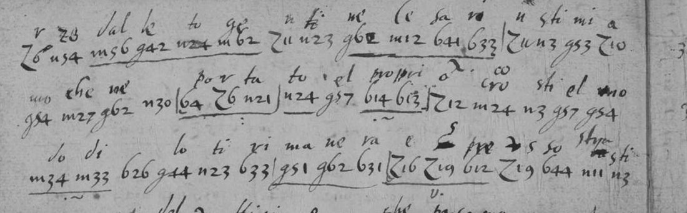

At a glanceNot solved · not yet worked
- The letters
- Two Italian letters, sender and recipient unknown, intercepted in England and worked on by the English codebreaker whose file dates from 1623–25.
- Where
- The National Archives, Kew, SP 106/10 ff. 186–187 and 190–192 (DECODE R704, 46 lines, ~700 groups; R721, 26 lines, ~300 groups; group counts DECODE’s).
- The cipher
- Each group is a letter followed by one or two figures. The codebreaker wrote Italian syllables above them, so it is syllabic and the plaintext is Italian.
- What was done
- The system was told apart from the file’s other ciphers, and two records DECODE files with it were moved out (R720 and R722 belong to the 1625 code).
- Still open
- Everything: no transcription yet, and the codebreaker’s glosses have not been aligned against the groups.
The two letters belong to one codebreaker’s file, which holds several ciphers; each has its own page (a different cipher in each): the three-figure “Venetian Cifer” (sp106box10), the two-figure nomenclator of his key sheet R725 (sp106r725) and a second three-figure code in a letter of 1625 (sp106r722).
01The cipher

Z6 n54 m56 g42 n24 m62, some underlined and bracketed, with the codebreaker’s syllables above (dal … to ge … me … sa; che me … por ta to … el propri; do di … lo ti ri ma ne ra), read off the image, not yet aligned. Image: The National Archives, Kew, SP 106/10, via DECODE R704 (rotated here).The groups are a letter (Z, n, m, g and others) followed by one or two figures, in numbered lines, with no clear text between them. The codebreaker worked these letters the way he worked the others in the file, writing a syllable above each group, so his partial decipherment is on the page. That is the method that rebuilt the “Venetian Cifer”, and it has not yet been applied here.
DECODE points from R720 to R704 (“possibly related”); R720 is covered in three-figure groups and is a worksheet on the 1625 letter, not on this system. R722, filed here at first following DECODE’s pointers, is that 1625 letter. Two further records, R723 and R724, were fetched and have not been examined.
02What remains
- Transcribe R704 and R721 group by group with the codebreaker’s syllables, and align them to rebuild the syllabary.
- Examine R723 and R724.
- Identify the writers once any of the text is deciphered.
03Sources
- The National Archives, Kew, State Papers 106, box 10, ff. 186–187, 190–192.
- DECODE (de-crypt.org) records 704 and 721. Images are login-only and are not reproduced beyond the detail shown here.
Notes in targets/sp106r704/. Images from DECODE are not committed.